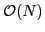
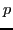
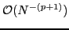
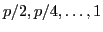
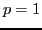
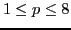
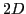
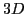

We are interested on asymptotically optimal--

--complexity solvers for approximating the solution of elliptic partial differential equations (PDEs), whereOur goal is to develop a parallel geometric multigrid for solving systems arising from higher-order discretizations of variable-coefficient elliptic partial differential equations on arbitrary geometries using highly adapted meshes. High-order discretizations offer several advantages. According to standard isoparametric polynomial approximation theory, by using a finite element basis of at least degree

, we can achieve very fast
convergence for sufficiently smooth problems while improving the locality and thus the CPU efficiency of the calculations.Our method is designed for meshes that are built from an unstructured hexahedral macro mesh, in which each macro element is adaptively refined as an octree. This forest-of-octrees approach enables us to generate meshes for complex geometries with arbitrary levels of local refinement. We use geometric multigrid (GMG) for each of the octrees and algebraic multigrid (AMG) as the coarse grid solver. We designed our GMG sweeps to entirely avoid collectives, thus minimizing communication cost. Recently, we presented weak and strong scaling results for the 3D variable-coefficient Poisson problem using linear discretization that demonstrate high parallel scalability. Here we explore various approaches for extending our geometric multigrid solver to support higher-order discretizations.
For higher-order finite-element discretizations, the following approaches are commonly used,

, followed by geometric coarsening of the
grid. The main shortcoming of this approach has been the dependence of the convergence factor on the order of the polynomial basis.In summary, the overall theme of existing work appears to use low-order approximations as preconditioners. The advantages of doing this are mainly in the simplicity of the approach and the availability of parallel multigrid solvers capable of solving such lower-order operators. The sparsity of the lower-order operators also permits the use of AMG for solving the lower-order operators, possibly obtained via discretizations on unstructured meshes. Although there are examples of using Algebraic Multigrid directly on operators resulting from higher-order discretizations, limited work has been done on using geometric multigrid with higher-order discretizations. To the best of our knowledge, no prior work on using geometric multigrid for solving systems arising from higher-order discretizations on arbitrary geometries using highly adapted meshes. In this work, we develop geometric multigrid methods to support higher-order discretizations (

) and compare compare against preconditioning using the co-located linear operator. We evaluate using variable-coefficient Poisson problems on
and
domains. We demonstrate that by using appropriate inter-grid transfer operators and smoothers, mesh-independent convergence is possible ( ) for the direct approach. For the direct approach, best results are obtained using the symmetric successive over-relaxation (SSOR) smoother. We conclude with thoughts on the parallelization of the proposed approach.